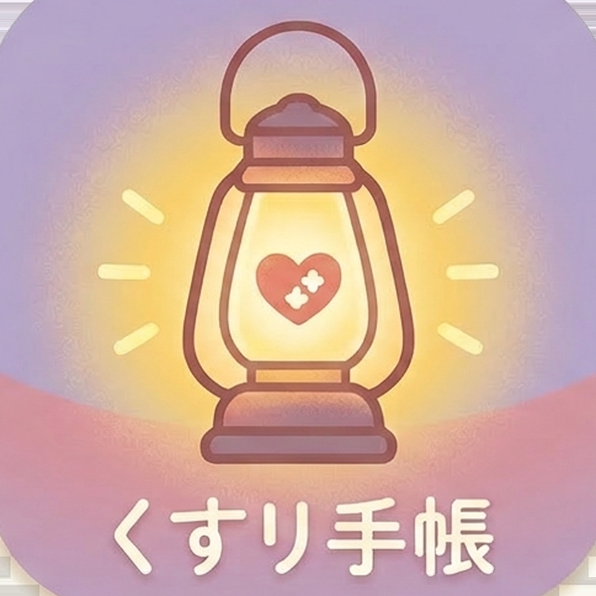

おくすり手帖
処方箋QRスキャンでお薬をかんたん管理
機能
- 処方箋のQRコードをスキャンするだけでお薬情報を自動記録
- 現在服用中のお薬を一覧表示、残日数をリアルタイムで確認
- 処方履歴を時系列で管理、薬品名・医療機関で検索
- 処方データをJSONでエクスポート・共有
- 薬品マスタをオンラインで最新に更新可能
- デモデータでQRコードなしでも全機能をお試し
- iPhone / iPad ユニバーサル対応
- 処方データは端末内にのみ保存、外部サーバーへの送信なし
こんな方におすすめ
- 複数の医療機関から薬を処方されている方
- 紙のお薬手帳を持ち歩くのが面倒な方
- 過去の処方履歴をいつでも確認したい方
Features
- Scan prescription QR codes to automatically record medication information
- View all current medications at a glance with real-time remaining days
- Manage prescription history chronologically, search by drug name or medical institution
- Export and share prescription data in JSON format
- Update drug master online to keep drug names current
- Try all features with demo data — no QR code needed
- Universal app for iPhone and iPad
- Prescription data stored only on device — never sent to external servers
Perfect For
- People receiving prescriptions from multiple medical institutions
- Anyone tired of carrying a paper medication notebook
- Those who want to review past prescription history anytime